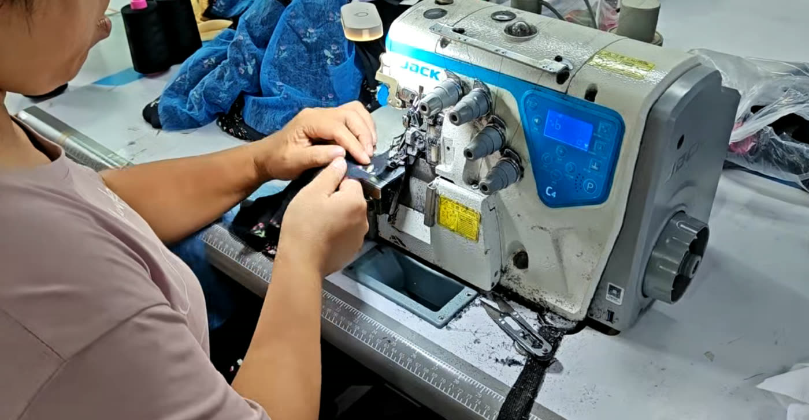
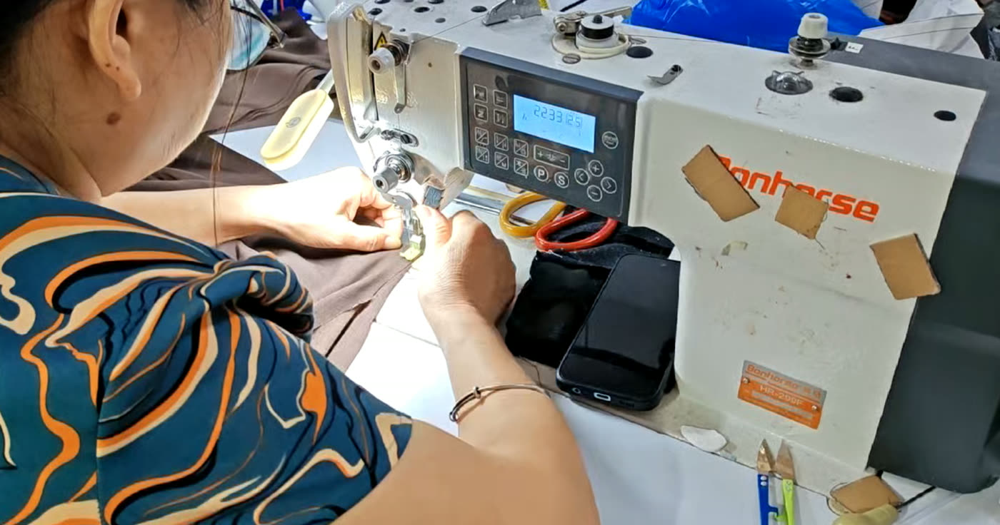

The best fashion brands rarely fail because they lack ideas. The mood is clear. The customer is understood. The styling, campaign language and product direction are already there. The real pressure begins when a strong creative idea has to become a physical garment, and then become that same garment again across sizes, colours and production runs.
This is especially true for Australian contemporary womenswear brands and boutique labels that work in a refined space: clean dresses, minimal tops, tailored pants, fluid occasionwear, soft resort pieces, knitwear, elevated basics and seasonal capsules. On the surface, these products can look effortless. In production, they are sensitive.
A minimalist dress may depend on the way fabric falls from the shoulder. A tailored pant may depend on millimetres around the waist and hip. A silk-look top may depend on seam handling, pressing and tension. A knit cardigan may depend on yarn recovery and panel consistency. These are not abstract design details. They are the difference between a product that feels like the brand and one that simply looks similar in a photo.
The Gap Between Creative Vision and Production Reality
When brands are inspired by the Australian design market, the goal is often a balance of ease and polish. The product should feel modern, but not over-designed. It should look relaxed, but still precise. It should work for resort, occasion, retail, wholesale and everyday wardrobes without losing its quiet identity.
The challenge is that production naturally pushes every design toward practical decisions. Fabric availability, shrinkage, grading, seam allowance, lining, button placement, MOQ, cost and bulk lead time all begin to influence the garment. A good womenswear manufacturer should not erase the design idea while solving those practical problems.
For growing brands, this is where many issues appear:
- The approved sample looks good, but bulk production feels slightly different.
- The fabric selected for sample development cannot be repeated in enough quantity.
- The first fit is promising, but grading across sizes changes the silhouette.
- A clean design becomes too expensive because construction was not reviewed early.
- Communication between design, sampling and production is too slow for seasonal deadlines.
These problems are not always dramatic. Often they are small, repeated frictions. But over time, they cost money, delay launches and weaken customer trust.
Why Minimal and Contemporary Womenswear Is Harder Than It Looks
Minimalist fashion is unforgiving because there are fewer details to hide behind. A simple tank top, bias cut dress, tailored trouser or clean woven shirt relies heavily on proportion, fabric behaviour and finishing. If the neckline sits wrong, the entire piece feels wrong. If the hem twists, the customer notices. If the fabric does not recover after wearing, the product loses its value quickly.
For brands working in contemporary womenswear, quiet luxury, capsule wardrobe essentials or premium ready-to-wear, production discipline matters as much as design taste. The factory has to understand how the garment should feel, not only how it should be assembled.
The strongest production partner is not only a clothing factory. It is a development partner that helps protect the original design intention while making the garment commercially realistic.
What Australian Brands Usually Need From a Clothing Manufacturer
Many Australian fashion founders are not looking for anonymous mass production. They need a partner who can help them move from sample to small batch, then from small batch to repeatable production. They usually care about product feel, fabric selection, communication clarity and stable timelines.
For a brand developing dresses, woven tops, pants, shirts, jackets, knitwear or sweater pieces, a practical production conversation should start before fabric and construction decisions are locked. This avoids the common mistake of designing a beautiful product that becomes too difficult or too costly to reproduce.
How Cyncho Supports the Development Stage
Cyncho was founded in 2010 and has grown from a sewing workshop into a womenswear production partner with a wholly-owned woven factory and invested knitwear and sweater factory resources. This gives us a useful position for brands that need both woven apparel and knitwear support without splitting communication across too many suppliers.
We work with fashion brands, wholesalers, distributors and retailers that need OEM clothing manufacturing, ODM clothing manufacturing, private label clothing manufacturing and custom garment development. Our core categories include women?s tops, shirts, pants, dresses, jackets, coats, knit tops, sweaters, cardigans, pullovers and knitted pants.
For brands with a contemporary Australian direction, our work often includes:
- Reviewing design references and advising whether the construction is production-ready.
- Helping source fabric, lining, trims, buttons, labels and other accessories.
- Developing samples before bulk production begins.
- Checking fabric behaviour, fit details and finishing requirements.
- Supporting low MOQ and small batch clothing production when appropriate.
- Managing quality checks so bulk production stays close to the approved sample.

The Real Pain Point: Protecting the Product While Scaling
Growth sounds exciting, but for many brands it introduces a new risk: the product becomes less controlled. A founder may approve a perfect sample, receive positive feedback from the market, then struggle to reproduce the same quality when the order grows.
This happens because scaling is not only about capacity. A larger order needs clearer records, fabric tracking, measurement standards, operator instructions, inspection points and communication between development and production. Without this structure, a brand may receive garments that are technically acceptable but emotionally off-brand.
For labels that sell through wholesale or international retail, consistency is even more important. Buyers expect the same fit and quality across deliveries. Customers expect the second purchase to feel like the first. A reliable garment factory should help reduce this variation before it becomes a returns problem.
Questions to Ask Before Choosing a Manufacturer
Before choosing a clothing manufacturer in China or any offshore production partner, brands should ask questions that reveal how the factory handles product development, not just unit price.
- Can the factory support both sampling and production, or only bulk orders?
- What is the realistic MOQ for the chosen fabric and garment type?
- Can they source fabric and trims, or must the brand manage all materials alone?
- How do they compare bulk production with the approved sample?
- Do they understand woven garments, knitwear and sweater production if the collection includes mixed categories?
- How quickly can they communicate when a construction issue appears?
The right answer is not always the cheapest answer. For design-led brands, the right answer is the one that protects product quality, avoids avoidable revisions and gives the brand confidence to develop the next range.
Keywords Brands Often Search When They Reach This Stage
When a brand is ready to move beyond local sampling or small studio production, the search terms usually become more practical. Founders and production managers may look for a womenswear manufacturer in China, low MOQ clothing factory, small batch clothing manufacturer, custom clothing manufacturer, private label clothing manufacturer or OEM apparel factory.
Product searches also become more specific: women dresses factory, women pants manufacturer, women jacket supplier, women shirt factory, minimalist dress manufacturer, tailored pants production, silk top manufacturer, organic cotton shirt factory, knitted cardigan manufacturer and knitwear women production. These searches usually mean the brand is no longer looking for general inspiration. It is looking for a production partner that can respond to a real product brief.
A Better Way to Start Production
For new projects, the best starting point is usually one style or a small capsule rather than an entire collection. Send a tech pack, reference garment, sketch, fabric direction, target quantity, size range and delivery expectation. From there, the factory can review sample feasibility, MOQ, fabric options and production risks before the brand invests too heavily.
This approach works well for Australian and international brands that want to test a product without losing design control. It also helps both sides understand communication style, sample accuracy and quality expectations before larger orders begin.
Working With Cyncho
Cyncho supports contemporary womenswear brands from fabric sourcing and sample development through bulk production and after-sales communication. We understand the Australian, New Zealand, United States, United Kingdom and European markets, and have worked with more than 150 clients across womenswear categories.
If your brand is building refined womenswear, minimalist fashion, modern wardrobe essentials, occasion dresses, tailored pants, woven shirts, jackets, knitwear or private label apparel, we can review your project and suggest a practical development path.
Explore our women clothing manufacturing, private label clothing manufacturer, OEM clothing manufacturing, knitwear production and request a factory quote when your next style is ready.